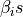
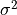

<img src=”images/mcg.jpg”, style=”width: 100px”>
Linear Gaussian Bayesian Networks (GBNs)¶
Generate 
 and
and  from a Multivariate Gaussian Distribution with a Mean and a Variance.¶
from a Multivariate Gaussian Distribution with a Mean and a Variance.¶
What if the inputs to the linear regression were correlated? This often happens in linear dynamical systems. Linear Gaussian Models are useful for modeling probabilistic PCA, factor analysis and linear dynamical systems. Linear Dynamical Systems have variety of uses such as tracking of moving objects. This is an area where Signal Processing methods have a high overlap with Machine Learning methods. When the problem is treated as a state-space problem with added stochasticity, then the future samples depend on the past. The latent parameters, where provide a linear combination of the univariate gaussian distributions as shown in the figure.
<img src=”images/gbn.png”, style=”width: 400px”>
The observed variable, can be described as a sample that is drawn from the conditional distribution:
The latent parameters  and  need to be determined.
[1]:
# from pgmpy.factors.continuous import LinearGaussianCPD
import sys
import numpy as np
import pgmpy
sys.path.insert(0, "../pgmpy/")
from pgmpy.factors.continuous import LinearGaussianCPD
mu = np.array([7, 13])
sigma = np.array([[4, 3], [3, 6]])
cpd = LinearGaussianCPD(
"Y", evidence_mean=mu, evidence_variance=sigma, evidence=["X1", "X2"]
)
cpd.variable, cpd.evidence
[1]:
('Y', ['X1', 'X2'])
[2]:
#### import numpy as np
%matplotlib inline
import pandas as pd
import seaborn as sns
import numpy as np
from matplotlib import cm
from mpl_toolkits.mplot3d import Axes3D
from scipy.stats import multivariate_normal
from matplotlib import pyplot
# Obtain the X and Y which are jointly gaussian from the distribution
mu_x = np.array([7, 13])
sigma_x = np.array([[4, 3], [3, 6]])
# Variables
states = ["X1", "X2"]
# Generate samples from the distribution
X_Norm = multivariate_normal(mean=mu_x, cov=sigma_x)
X_samples = X_Norm.rvs(size=10000)
X_df = pd.DataFrame(X_samples, columns=states)
# Generate
X_df["P_X"] = X_df.apply(X_Norm.pdf, axis=1)
X_df.head()
g = sns.jointplot(X_df["X1"], X_df["X2"], kind="kde", height=10, space=0)

Linear Gaussian Models - The Process¶
The linear gaussian model in supervised learning scheme is nothing but a linear regression where inputs are drawn from a jointly gaussian distribution.
Determining the Latent Parameters via Maximum Likelihood Estimation (MLE)
The samples drawn from the conditional linear gaussian distributions are observed as:
Taking log,
Differentiating w.r.t , we can get k+1 linear equations as shown below:
The Condtional Distribution p(Y|X)¶
<img src=”images/lgm.png”, style=”width: 700px”>
The betas can easily be estimated by inverting the coefficient matrix and multiplying it to the right-hand side.
[5]:
beta_vec = np.array([0.7, 0.3])
beta_0 = 2
sigma_c = 4
def genYX(x):
x = [x["X1"], x["X2"]]
var_mean = np.dot(beta_vec.transpose(), x) + beta_0
Yx_sample = np.random.normal(var_mean, sigma_c, 1)
return Yx_sample[0]
X_df["(Y|X)"] = X_df.apply(genYX, axis=1)
X_df.head()
sns.distplot(X_df["(Y|X)"])
# X_df.to_csv('gbn_values.csv', index=False)
/Users/harishkashyap/Documents/MCG/pgmpy/venv/lib/python3.6/site-packages/scipy-1.1.0-py3.6-macosx-10.7-x86_64.egg/scipy/stats/stats.py:1713: FutureWarning: Using a non-tuple sequence for multidimensional indexing is deprecated; use `arr[tuple(seq)]` instead of `arr[seq]`. In the future this will be interpreted as an array index, `arr[np.array(seq)]`, which will result either in an error or a different result.
return np.add.reduce(sorted[indexer] * weights, axis=axis) / sumval

[4]:
cpd.fit(X_df, states=["(Y|X)", "X1", "X2"], estimator="MLE")
(Y|X) 108620.019971
X1 70061.804718
X2 130484.483348
dtype: float64
[108620.0199709961]
b0_coef b1_coef b2_coef
0 10000.000000 70061.8 130484
1 70061.804718 530593 943171
2 130484.483348 943171 1.76157e+06
[4]:
(array([1.75405452, 0.69412373, 0.32531005]), 4.045369149779373)
For any questions feel free to contact hkashyap [at] icloud.com. Thanks to Praveen Kaushik for the diagrams(diagram.ai), Kiran Byadarhaly and Karthik Chandrashekhar for proof reading the math.